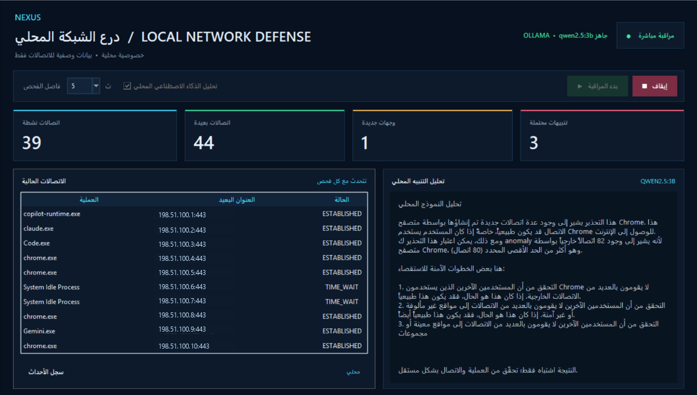

لوحة مراقبة مباشرة
جدول للاتصالات الحالية، وعدادات للحالات والوجهات، وسجل للأحداث في واجهة سطح مكتب عربية.
لوحة مكتبية خفيفة لنظام Windows تساعدك على مراجعة اتصالات الشبكة والتنبيهات المبنية على قواعد، مع تحليل اختياري بواسطة ذكاء اصطناعي يعمل محليًا.

مشروع تعليمي يجمع مراقبة الاتصالات المحلية وواجهة واضحة وتنبيهات قابلة للفهم، مع الحفاظ على نطاق متواضع وشفاف.
جدول للاتصالات الحالية، وعدادات للحالات والوجهات، وسجل للأحداث في واجهة سطح مكتب عربية.
يرصد تجاوز حدود الاتصالات والوجهات الجديدة واتصالات العمليات، مع فترة تهدئة تحد من تكرار التنبيهات.
يمكن لـ Ollama المحلي تلخيص التنبيه بعد ظهوره؛ وتستمر المراقبة القائمة على القواعد حتى عند عدم توفره.
فواصل الفحص قابلة للتغيير، والتحليل الذكي اختياري ومحدد المهلة ولا يُطلب في كل دورة.
ملفات تشغيل وإعداد مخصصة لويندوز، مع نسخة طرفية للاستخدام دون الواجهة الرسومية.
أدلة استخدام باللغتين واختبارات لوظائف كشف القواعد وتجنب التنبيهات المكررة.
استقبال اختياري لـ Syslog عبر UDP وقراءة إضافات Wazuh alerts.json؛ للعرض والتحليل الاستشاري فقط.
تسلسل واضح يبدأ محليًا وينتهي بمؤشر يحتاج إلى مراجعة بشرية.
يقرأ psutil بيانات الاتصالات التي يتيحها Windows.
تُقارن الأعداد والوجهات بحدود قابلة للضبط.
تظهر المؤشرات في اللوحة مع فترة تهدئة للتكرار.
عند التفعيل، يلخص Ollama المحلي التنبيه للمساعدة على مراجعته.
نقطة بداية قابلة للتوسعة، وليست ادعاءً بالتوافق الشامل مع أنظمة مراكز البيانات.
يعرض المشروع ما يفعله وما لا يفعله، دون ادعاء أنه بديل لمنصة أمنية متكاملة.
التطبيق مخصص لـ Windows. يمكن تشغيل المراقبة دون Ollama، وإضافة التحليل المحلي اختيارية.
نزّل المشروع، ثم شغّل ملفات الإعداد والواجهة.
setup_windows.bat run_dashboard.bat
ثبّت Ollama ثم نزّل النموذج الافتراضي؛ حجمه يقارب 1.9 GB.
ollama pull qwen2.5:3b
الكود المصدري، أدلة التشغيل، الاختبارات، والتنزيل من المستودع العام.